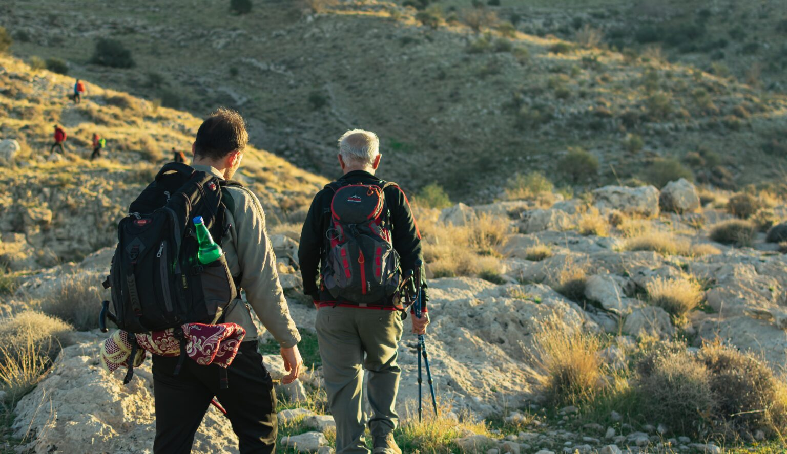
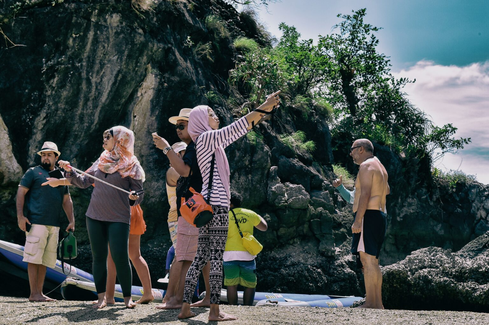
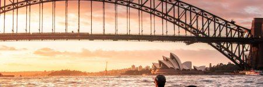

Discover Sydney’s top private tours to the
Blue Mountains, Sydney City, Hunter
Valley, Jervis Bay and much more

Private and Public Tours in Sydney
"Experience a Day with Us and Unlock the Key to Sydney!"
Explore Sydney and its surrounding areas with our exclusive private tours. Our carefully crafted itineraries highlight the region’s stunning scenery and rich culture. Tailor these itineraries to your preferences or collaborate with us to design a completely personalized day tour just for you. Don’t miss a single moment during your visit to Sydney with our diverse range of private tour options.
THE GREAT OCEAN ROAD 12 APOSTLES 1 DAY TOURS
It is a 243-kilometer (151-mile) stretch of road along the south-eastern coast of Australia
THE GREAT OCEAN ROAD 12 APOSTLES 1 DAY TOURS
It is a 243-kilometer (151-mile) stretch of road along the south-eastern coast of Australia
THE GREAT OCEAN ROAD 12 APOSTLES 1 DAY TOURS
It is a 243-kilometer (151-mile) stretch of road along the south-eastern coast of Australia
THE GREAT OCEAN ROAD 12 APOSTLES 1 DAY TOURS
It is a 243-kilometer (151-mile) stretch of road along the south-eastern coast of Australia
THE GREAT OCEAN ROAD 12 APOSTLES 1 DAY TOURS
It is a 243-kilometer (151-mile) stretch of road along the south-eastern coast of Australia
THE GREAT OCEAN ROAD 12 APOSTLES 1 DAY TOURS
It is a 243-kilometer (151-mile) stretch of road along the south-eastern coast of Australia
THE GREAT OCEAN ROAD 12 APOSTLES 1 DAY TOURS
It is a 243-kilometer (151-mile) stretch of road along the south-eastern coast of Australia
THE GREAT OCEAN ROAD 12 APOSTLES 1 DAY TOURS
It is a 243-kilometer (151-mile) stretch of road along the south-eastern coast of Australia
THE GREAT OCEAN ROAD 12 APOSTLES 1 DAY TOURS
It is a 243-kilometer (151-mile) stretch of road along the south-eastern coast of Australia
THE GREAT OCEAN ROAD 12 APOSTLES 1 DAY TOURS
It is a 243-kilometer (151-mile) stretch of road along the south-eastern coast of Australia
THE GREAT OCEAN ROAD 12 APOSTLES 1 DAY TOURS
It is a 243-kilometer (151-mile) stretch of road along the south-eastern coast of Australia
THE GREAT OCEAN ROAD 12 APOSTLES 1 DAY TOURS
It is a 243-kilometer (151-mile) stretch of road along the south-eastern coast of Australia
THE GREAT OCEAN ROAD 12 APOSTLES 1 DAY TOURS
It is a 243-kilometer (151-mile) stretch of road along the south-eastern coast of Australia
THE GREAT OCEAN ROAD 12 APOSTLES 1 DAY TOURS
It is a 243-kilometer (151-mile) stretch of road along the south-eastern coast of Australia
THE GREAT OCEAN ROAD 12 APOSTLES 1 DAY TOURS
It is a 243-kilometer (151-mile) stretch of road along the south-eastern coast of Australia
THE GREAT OCEAN ROAD 12 APOSTLES 1 DAY TOURS
It is a 243-kilometer (151-mile) stretch of road along the south-eastern coast of Australia
Why should you choose to discover Sydney with our guidance?

Exclusive.
Each Daily Sydney Tours adventure is exclusively private, ensuring no unfamiliar faces. You and your guide/driver will have the entire vehicle to yourselves, allowing for a leisurely exploration without any time constraints. Rest assured, our vehicles undergo thorough cleaning to prioritize your personal space and maintain hygiene standards.
Personalised.
Each of our Sydney private tours is customized to align with your preferences, interests, and preferred pace. Say goodbye to generic tourist experiences; we tailor your adventure to match your specific interests, ensuring a personalized tour that suits your preferred pace and duration.

Handpicked.
We are dedicated to assisting you in crafting enduring memories. Leveraging our local expertise, we curate the finest offerings in Sydney, selecting only the most exceptional experiences for you.
Value and satisfaction guaranteed..
Experience the unparalleled charm of Sydney with our top-rated private tours, offering the best value in the city. Our commitment to personalized adventures, local knowledge, and flexible itineraries ensures an unforgettable Sydney experience. Let us inspire you with passion and expertise..

We Craft Memories in Sydney.
Embark on a journey with Daily Sydney Tours to unlock the secrets of this vibrant city and its breathtaking surroundings. Our local guides are not just experts in showcasing the popular landmarks, but they are also adept at revealing the hidden treasures that only true locals know about.
Whether you’re an individual seeking solo adventures, a couple in search of a romantic getaway, a family aiming for memorable moments, or a group of friends ready for a collective exploration, our tours are designed to cater to all. The flexibility of our itineraries ensures that you can enjoy the sights and experiences at a pace that aligns with your preferences.
Whether you’re an individual seeking solo adventures, a couple in search of a romantic getaway, a family aiming for memorable moments, or a group of friends ready for a collective exploration, our tours are designed to cater to all. The flexibility of our itineraries ensures that you can enjoy the sights and experiences at a pace that aligns with your preferences.
Picture yourself gliding through the cityscape in a comfortable vehicle, with the freedom to delve into the nooks and crannies that make Sydney truly special. As you venture beyond the city limits, explore regional gems that often go unnoticed, creating a well-rounded and unforgettable adventure.
Daily Sydney Tours is more than just a tour provider; we are memory-makers, dedicated to ensuring that your time in Sydney becomes a tapestry of treasured moments. Become part of the legacy of those who have experienced Sydney’s wonders through the lens of our expert guides, and let us be the architects of your #1 loved private tour experience.
Daily Sydney Tours is proudly COVID Safe.
Your health is our priority. We are committed to taking all the necessary steps to keep you safe while you explore the city on your Sydney Private Tour.
Blogs

The Best Places to Take Stunning Photos in Sydney: Your Go-To 2020 Photo Guide
When it comes to Instagram, there’s no denying Sydney is made for the job. Below you’ll find our ultimate Insta-worthy guide to
Best Activities in Sydney: Must-Do Experiences for an Unforgettable Time!
It’s little wonder that Sydney is Australia’s drawcard city for both overseas and local tourists. Sydney offers an array of activities
The Must See Landmarks of Sydney
Sydney is a captivating city with a pleasant climate, friendly people, a Pacific Ocean location, enchanting beaches, and a vibrant atmosphere, making
This is what makes us different
Hear from our clients.
"Incredible experience! Knowledgeable guide, iconic landmarks, and hidden gems. Highly recommend for exploring Sydney!"
Mike Sendler
"Outstanding Sydney Tours! Knowledgeable guides, diverse itineraries, and exceptional service. An enriching way to discover the city!"
Melissa Miner
"Unforgettable sunset cruise! Magical views, attentive crew, and romantic atmosphere. Perfect way to enjoy Sydney's waterfront!"
Andrew Woods
"Sydney Tours exceeded expectations! Professional guides, seamless organization, and unforgettable experiences. Worth every penny!"
Jenny Sanders
"Memorable day exploring Sydney! Informative guides, well-paced itinerary, and breathtaking sights. Highly recommended for tourists!"
Steven Moore
"Sydney Tours delivers excellence! Attentive staff, comfortable transportation, and captivating destinations. A top choice for sightseeing!"